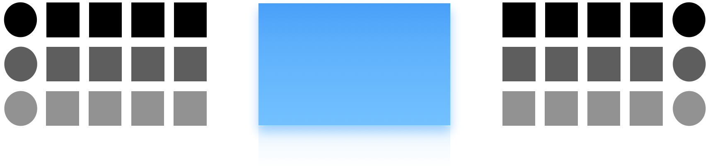

❍ What we have done:In this work we present Tao , a "symmetric" drum machine capable of both synthesizing audio waveforms from sequencer parameters as well as inferring sequencer parameters from audio waveforms.
Implementation for "sequencer parameters → audio waveforms" synthesis is not a standing problem; the main challenge of Tao lies in the reverse direction—"audio waveforms → sequencer parameter"—which we refer to as the sequencer parameter estimation problem. We leverage machine learning to assist with this; see the paper for technical details.
❍ Why:Recovering sequencer parameters from a sampled drum loop in audio waveform can restore low-level editability to loops that would otherwise remain frozen as audio. The philosophy behind this system draws inspiration from Taoism: that which returns to its primal state follows the great Way of Tao.
❍ btw:Sequencer parameters (minimal):
While the interface of Tao is still under construction, you are invited to imagine an interactive web-based regular drum machine + sequencer interface which probably looks like this, but with an additional ⇪drum loop audio file upload section⇪.
❍ Finally:See below for examples of sequencer parameters recovered by Tao from input drum loops. Desktop recommended for optimal display.
input:
| a drum loop |
|---|
Tao output:
| est. tempo: | 190 | |
|---|---|---|
| extracted one-shot sample | estimated step vector | |
| 🀙 kick: | ● ○ ○ ○ ● ○ ○ ○ | |
| 🀄︎ snare: | ○ ○ ○ ○ ● ● ○ ○ | |
| 🀑 hihats: | ○ ● ● ● ● ● ● ● | |
| reconstruction | ||
"reconstruction" is the drum loop audio synthesized using the estimated sequencer parameters, provided for a quick assessment on the estimation quality.
input:
| a drum loop |
|---|
Tao output:
| est. tempo: | 71 | |
|---|---|---|
| extracted one-shot sample | estimated step vector | |
| 🀙 kick: | ● ○ ● ● ○ ○ ○ ○ | |
| 🀄︎ snare: | ● ● ● ● ○ ● ● ● | |
| 🀑 hihats: | ● ● ○ ○ ● ● ○ ○ | |
| reconstruction | ||
"reconstruction" is the drum loop audio synthesized using the estimated sequencer parameters, provided for a quick assessment on the estimation quality.
input:
| a drum loop |
|---|
Tao output:
| est. tempo: | 159 | |
|---|---|---|
| extracted one-shot sample | estimated step vector | |
| 🀙 kick: | ● ○ ○ ● ○ ○ ○ ○ | |
| 🀄︎ snare: | ● ○ ● ● ○ ○ ● ● | |
| 🀑 hihats: | ● ● ● ● ● ● ● ● | |
| reconstruction | ||
"reconstruction" is the drum loop audio synthesized using the estimated sequencer parameters, provided for a quick assessment on the estimation quality.
input:
| a drum loop |
|---|
Tao output:
| est. tempo: | 100 | |
|---|---|---|
| extracted one-shot sample | estimated step vector | |
| 🀙 kick: | ● ● ● ● ● ● ● ● | |
| 🀙 kick: | ○ ○ ○ ● ○ ○ ○ ● | |
| 🀑 hihats: | ● ● ● ● ● ● ● ● | |
| reconstruction | ||
"reconstruction" is the drum loop audio synthesized using the estimated sequencer parameters, provided for a quick assessment on the estimation quality.
input:
| a drum loop |
|---|
Tao output:
| est. tempo: | 180 | |
|---|---|---|
| extracted one-shot sample | estimated step vector | |
| 🀙 kick: | ● ○ ○ ○ ● ○ ○ ○ | |
| 🀄︎ snare: | ● ● ○ ● ○ ○ ● ● | |
| 🀑 hihats: | ● ● ● ● ● ○ ● ● | |
| reconstruction | ||
"reconstruction" is the drum loop audio synthesized using the estimated sequencer parameters, provided for a quick assessment on the estimation quality.
There are different computational metrics for different components as each component in Tao handles a different subproblem.
We have synthesized two testing drum loops sets fom Freesound One-Shot Percussive Sounds - a random-rhythm testing set and a prior-rhythm testing set.
Random-rhythm testing set (Random): the testing set synthesized using randomly sampled step vectors following no prior rhythmic patterns.
Prior-rhythm testing set (Prior): the testing set synthesized using prior step vector collections (one collection for each percussive track), which are prepared by manual annotation from invited professional drummers and producers.
All one-shot samples in the testing set were unseen during training.
We adopt the commonly used Music Source Separation evaluation metrics including the Signal-to-Distortion Ratio (SDR) and the Scale-Invariant Signal-to-Distortion Ratio (SI-SDR).
| Metrics (in dB) | kick | snare | hihats |
|---|---|---|---|
| SDR (Prior) | 17.09 | 7.32 | 4.97 |
| SI-SDR (Prior) | 15.34 | 6.00 | 2.77 |
| SDR (Random) | 15.84 | 8.40 | 3.60 |
| SI-SDR (Random) | 14.33 | 7.37 | 0.43 |
We adopt accuracy metric which is computed if the estimated tempo is within 1% of the groundtruth tempo.
| Metrics | |
|---|---|
| Accuracy (Prior) | 0.995 |
| Accuracy (Random) | 0.999 |
For evaluating the estimated step vectors, we propose to use recall, precision and F-measure metrics considering it being a multi-label binary classification task.
| Metrics | kick | snare | hihats |
|---|---|---|---|
| F-measure(Prior) | 0.903 | 0.770 | 0.861 |
| F-measure(Random) | 0.908 | 0.860 | 0.813 |
for evaluating the quality of the extracted one-shot sample waveforms compared to the groundtruth ones used for loop synthesis, we propose to use the SDR and the SI-SDR metrics.
| Metrics (in dB) | kick | snare | hihats |
|---|---|---|---|
| SDR (Prior) | 48.21 | 15.23 | 29.29 |
| SI-SDR (Prior) | 40.62 | 20.31 | 20.31(?) |
| SDR (Random) | 37.80 | 33.35 | 25.36 |
| SI-SDR (Random) | 31.47 | 21.98 | 15.42 |
With no sequencer-info annotated drum loops dataset available in the public domain, we design a data synthesis pipeline in Tao utilizing the publicly available one-shot sample dataset Freesound One-Shot Percussive Sounds.
We synthesize drum loops using the one-shot samples and randomly generated step vectors and tempo.
The synthesis pipeline is built on 1D convolution which is differentiable and parallelizable; theoretically infinitely many annotated drum loops can be synthesized during training on-the-fly.
This paper does not involve experiments with human or animal participants. Datasets used for training machine learning models in this paper are acquired from open access datasets.
This work is funded by UK Research and Innovation [grant number EP/S022694/1] as part of the “UKRI Centre for Doctoral Training in Artificial Intelligence and Music”.